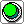
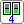
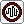

Interrupteur
InterrupteurLes composants d’entrée sont le début de tout circuit : ils donnent un signal (actif = 1, inactif = 0) sur leur sortie. Vous les commandez avec la souris.
Chaque composant d’entrée a une sortie sur son côté droit. C’est là que vous commencez un fil vers le reste du circuit. Voir Connexions.

Bouton-poussoirLa sortie est active tant que vous maintenez le bouton enfoncé avec la souris. Dès que vous relâchez, la sortie se désactive. Utilisez un bouton-poussoir pour des signaux brefs, par exemple pour faire avancer un compteur d’un pas.
InterrupteurCliquez sur l’interrupteur pour l’enclencher ou le couper. Il garde cette position jusqu’au prochain clic.

Commutateur DIPIl sert à saisir un nombre, par exemple pour l’écrire dans un bloc mémoire.
Donne une impulsion à intervalles réguliers : la sortie s’active et se désactive environ toutes les 0,3 seconde. Cliquez sur le bouton du bas pour démarrer le générateur ; cliquez à nouveau pour l’arrêter. Le voyant en haut clignote avec les impulsions.
Idéal pour faire tourner un compteur tout seul ou faire clignoter une lampe.

Capteur de lumièreSimule un capteur sensible à la lumière. Cliquez sur le capteur pour choisir « clair » ou « sombre » ; la sortie suit.
Simule un capteur de température. Cliquez sur le capteur pour choisir « chaud » ou « froid » ; la sortie suit.